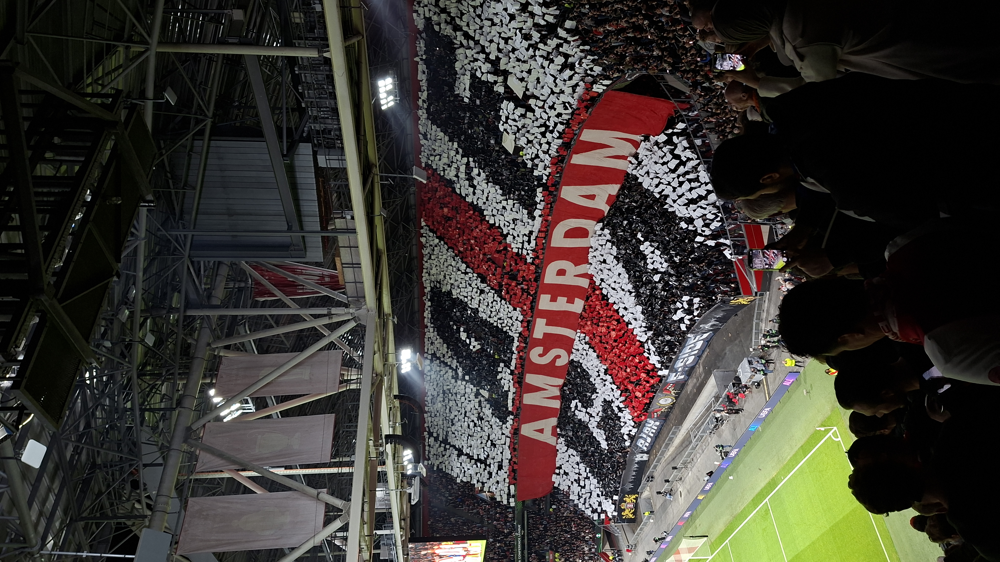
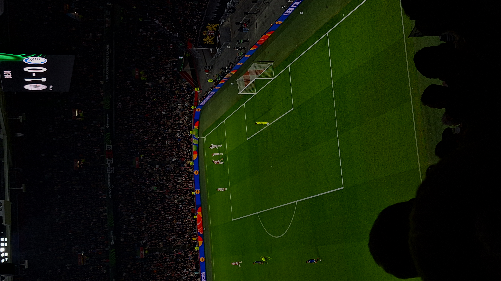
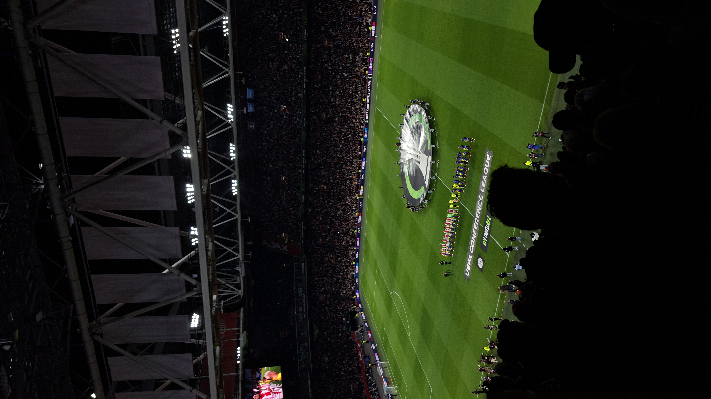
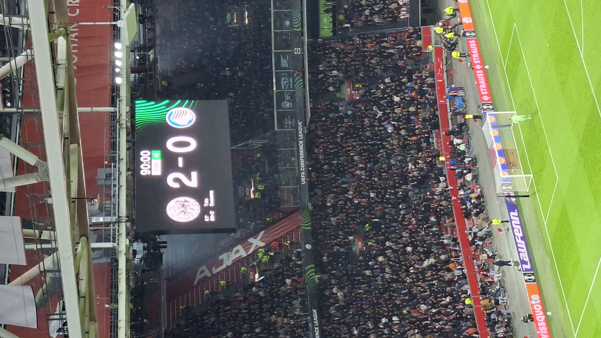

Ajax-Atalanta
Ajax wint met 2-0 van Atalanta in de ArenA en pakt de eerste zege in de Conference League! ⚪🔴⚪
Na de nederlaag bij Hajduk Split wilde Ajax zich herstellen, en dat lukte. Ajax had veel de bal een veel spannende aanvallen. Er was alleen 1 probleem: Scoren. Dat ging maar niet. Na 87 minuten lukt het dan toch, de invaller Tolu wint een 1 op 1 strijd met de verdediger en schiet raak. Nog geen 6 minuten later maakt Ouazane een wereld goal vanuit de linkerkant van het veld. De Arena ontplofte van vreugde.



